Overzicht
Gebouwen
Contact
Kaart
Programma met tijden
Vrijdag 24 april
5.45 - vertrek vanaf school per bus naar vliegveld Düsseldorf Vlucht 9:15 uur naar Rome (Fiumicino.)
13.20 - Aankomst Rome
16.00 - kennismaking Rome -S. Maria Maggiore; S. Prassede; S. Pudenziana; St. Pietro in Vincoli
19.00 - cena, avondprogramma. 23.00 op de kamer en stilte!
Zaterdag 25 april
7.30 - ontbijt
8.30 - Keizerfora; Forum Romanum; Palatijn;
12.30 - lunch
14.00 - Colosseum; S. Clemente; S. Giovanni in Laterano; Scala Santa
19.00 - cena, avondprogramma. 23.00 op de kamer en stilte!
Zondag 26 april
7.30 - ontbijt
9.00 - Museo Nazionale di Villa Giulia; Termen van Diocletainus; S. Maria delgi Angeli; S. Maria della Vittoria
12.00 - "trein"; Ostia Antica; Scavi di Ostia Antica
15.30 - verzamelen op het station Ostia Antica: "trein"; S. Paolo fuori le Mura (basilica, chiostro)
19.00 - cena, avondprogramma. 23.00 op de kamer en stilte!
Maandag 27 april
7.30 - ontbijt
9.00 - Piazza Campo di Fiori; theater van Pompeus; Palazzo Spada; Via Giulia; Villa Farnesina / botanische tuin; St. Maria in Trastevere;
11.00 - pauze
11.30 - Tibereiland; Cloaca; S. Maria in Cosmedin; Bocca della Verità; Teatro di Marcello; Foro Boario; Piazza Mettei (schildpaddenfontijn)
13.30 - vrij / eventueel keuzeprogramma
19.00 - cena, avondprogramma. 23.00 op de kamer en stilte!
Dinsdag 28 april
7.30 - ontbijt
8.30 - Castel Sant'Angelo; Friezenkerk; Sint Pieter (evt. beklimmen koepel)
12.30 - lunch
14.40 - Vaticaanse Musea: Pigna, Sarcofagi di Constantina e S. Elena, Laocoonte, Apollo Belvedere, Apoxyomenos, Torse del Belvedere, Augusto di Prima Porta, Gallerie, Stanze di Raffaello, Cappella Sistina, Biblioteca, Ex-Lateranense of Pinacoteca
19.00 - cena, avondprogramma. 23.00 op de kamer en stilte!
Woensdag 29 april
6.00? - ontbijt
7.00 - vertrek naar Pompei
13.00 - lunch
20.00 - cena, avondprogramma. 23.00 op de kamer en stilte!
Donderdag 30 april
7.30 - ontbijt
9.00 - Piazza Navona; Aca Pacis; St. Luigi dei Francesi; S.M. sopra Minerva; S. Ignazio; Gesù; Pantheon
11.30 - lunch, Piazza del Popolo; S. Maria del Popolo; Pincio;
13.00 - Villa Borghese (tweede groep 15.00)
19.00 - cena, avondprogramma. 23.00 op de kamer en stilte!
Vrijdag 1 mei
7.45 - ontbijt, vóór het ontbijt moeten de koffers ingepakt zijn
8.30 - laatste blik op Rome
9.30 - vertrek per bus naar vliegveld
14.20 - vertrek vlucht naar Düsseldorf
16:35 - aankomst vliegveld Düsseldorf. Vervoer per bus naar Leeuwarden
Basiliek van Santa Maria Maggiore
Basiliek van Santa Pudenziana
Santa Maria degli Angeli e dei Martiri
Santa Maria della Vittoria
Basiliek van Santa Maria in Trastevere
Sarcofagi di Constantina e S.Elena
Santa Maria sopra Minerva
Basiliek van Santa Maria Maggiore

De basiliek van Santa Maria Maggiore (Basilica di Santa Maria Maggiore) is een grote rooms-katholieke kerk op de heuvel Esquilijn in de Italiaanse hoofdstad Rome. Sinds 1929 is deze kerk met de rang van basilica maior in bezit van de Heilige Stoel. De basiliek is een van de zeven pelgrimskerken van Rome en een van de vier pauselijke basilieken.
De kerk werd in 431 door paus Sixtus III gesticht ter herinnering aan het Concilie van Efeze in hetzelfde jaar. De wijding aan Maria betekent het pauselijk goedkeuren van de besluiten van dit concilie, waar men onder andere de positie van Maria als moeder van Christus bepaald had.
Santa Prassede
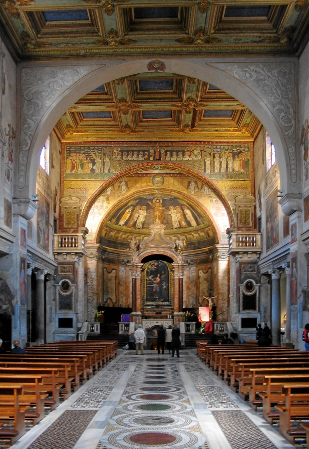
De Basilica di Santa Prassede (Basiliek van de Heilige Praxedis) is een basiliek op de Esquilijn in Oost-Rome, twee straten verwijderd van de Basiliek van Santa Maria Maggiore.
Basiliek van Santa Pudenziana
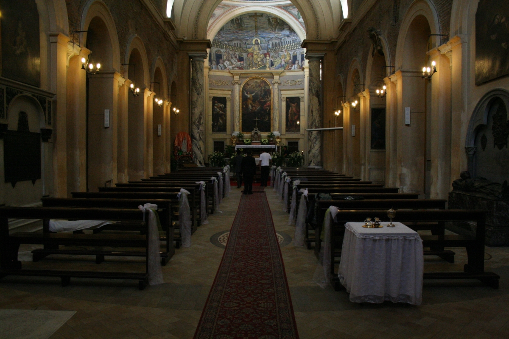
De Basilica di Santa Pudenziana (Basiliek van Sint Pudentiana) is een vierde-eeuwse kerk op de Esquilijn in Rome, gewijd aan de (waarschijnlijk als gevolg van een vertaalfout "verzonnen") heilige Pudentiana, zuster van de Heilige Praxedis en dochter van de Heilige Pudens.
San Pietro in Vincoli
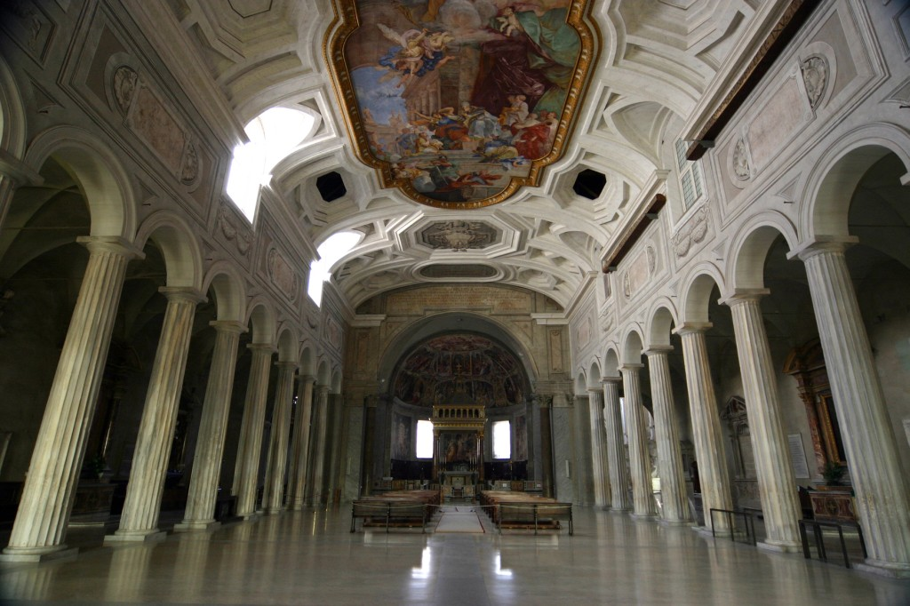
San Pietro in Vincoli (Sint Petrus' Banden oftewel Sint Pieter in ketens) is een basiliek op de Esquilijn in Rome.
Keizerfora (Fori Imperiali)
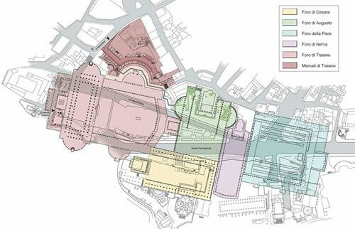
De Keizerlijke fora zijn tussen 46 v.CHr en 113 n.Chr. gebouwd en waren het hart van het Romeinse Rijk gedurende de laatste jaren van de Repbliek en het Keizerrijk. De Keizerfora maken echter geen deel uit van het Forum Romanum, die ligt aan het zuid-oosten van de Keizerfora.
Forum Romanum
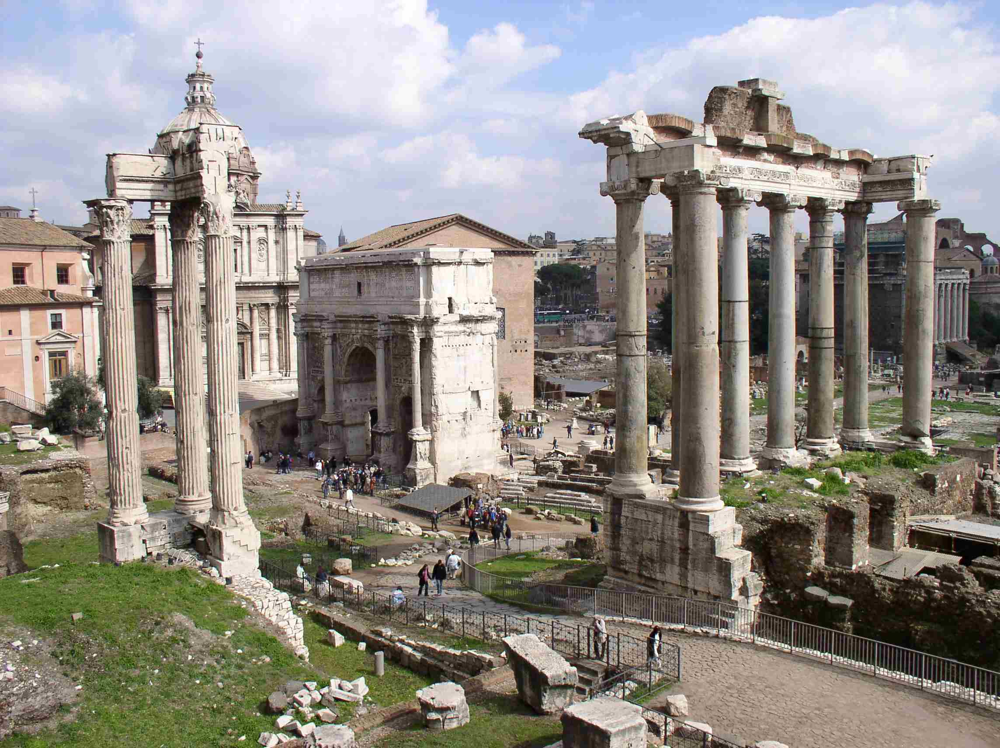
Het Forum Romanum (Latijn voor Romeins marktplein) was in de oudheid het centrum van Rome.
Het forum was in de gloriedagen van het Romeinse Rijk zowel het politieke, juridische, religieuze en commerciële centrum van de stad.
Palatijn
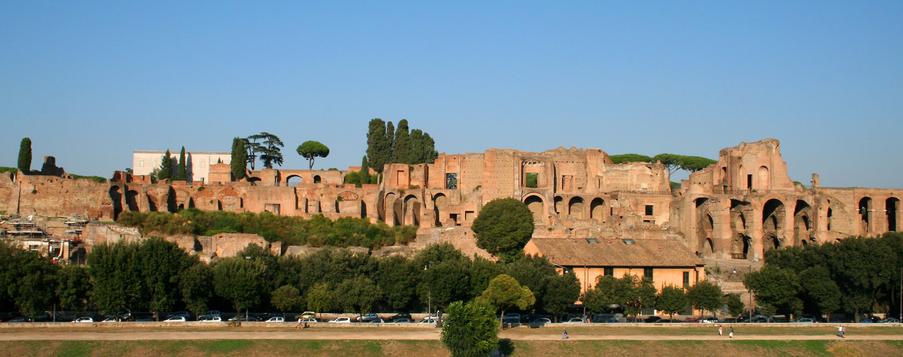
De Palatijn (Latijn: Palatium, Italiaans: Palatino) is een van de zeven heuvels van Rome. Hij geldt als de heuvel die het eerst werd bewoond, en was sinds de keizertijd de heuvel waar de keizers hun paleis hadden. De naam is misschien afgeleid van de herdersgod Pales, maar deze etymologie is omstreden.
Colosseum

Het Flavisch Amfitheater (Latijn: Amphitheatrum Flavium), beter bekend als het Colosseum, gebouwd in de 1e eeuw na Chr. te Rome, was het grootste amfitheater in het Romeinse Rijk.
San Clemente
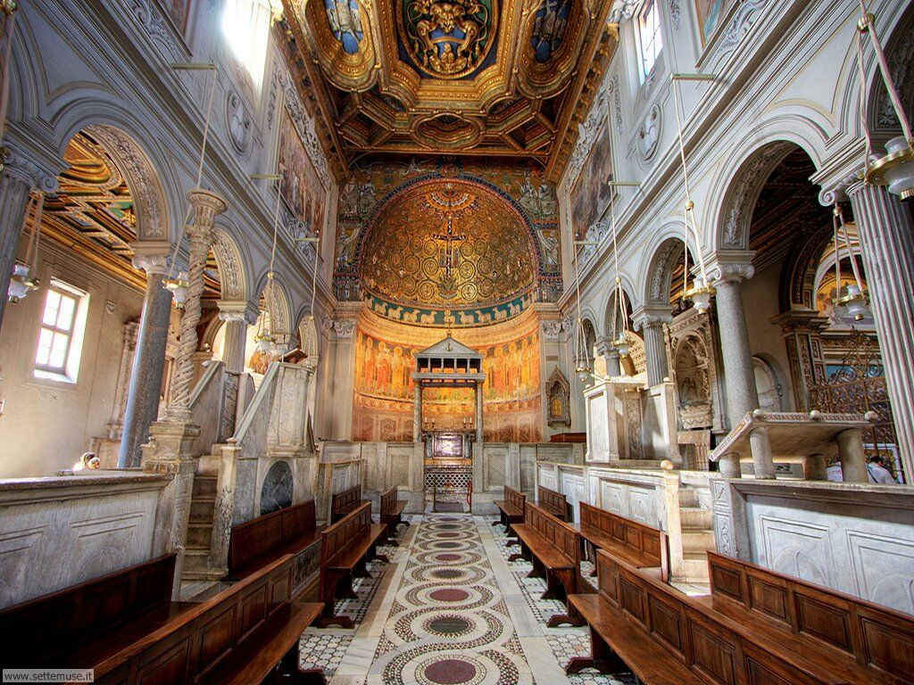
De basiliek San Clemente in Rome is een gebouwencomplex rond een twaalfde eeuwse rooms-katholieke kerk gewijd aan Paus Clemens I. Het geheel kan worden gezien als een archeologische bron voor de Romeinse architectuur en de politieke en religieuze geschiedenis van het vroege christendom tot en met de Middeleeuwen. De basiliek is gelegen aan het Piazza San Clemente, ter linkerzijde van de Via San Giovanni in Laterano.
Sint-Jan van Lateranen (San Giovanni in Laterano)
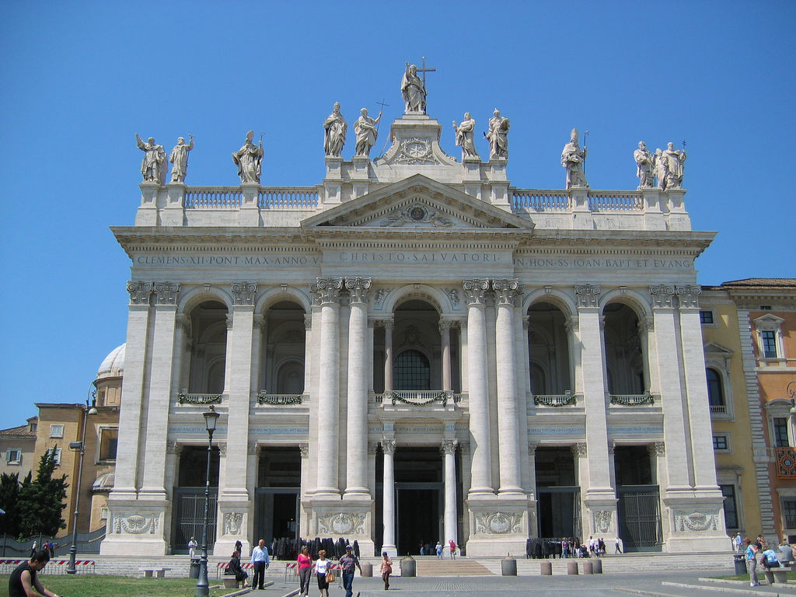
De Pauselijke Aartsbasiliek van Sint-Jan van Lateranen (Italiaans: San Giovanni in Laterano) of voluit de Aartsbasiliek van de Allerheiligste Verlosser is een basiliek aan de Piazza del Laterano, dicht bij het Lateraanse paleis in de Italiaanse hoofdstad Rome. De basiliek is een van de zeven pelgrimskerken van Rome en de oudste en in kerkelijke rang voornaamste van de vier pauselijke basilieken in Rome.
Heilige Trap (Scala Santa)
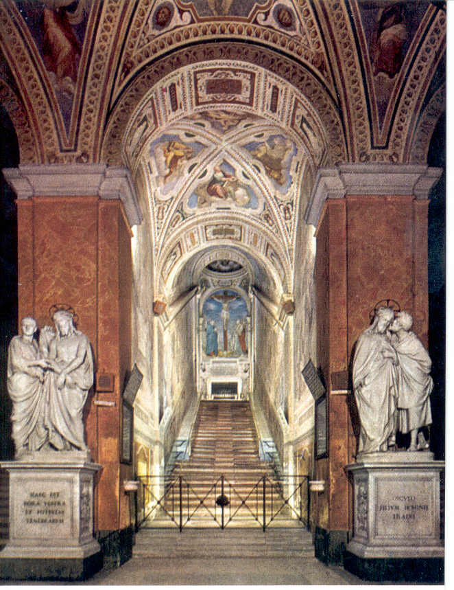
De Heilige Trap (Italiaans: Scala Santa, Latijn: Scala Sancta) is een rooms-katholiek heiligdom en bedevaartsoord in Rome. Hij bevindt zich in het complex van het oude Lateraanse paleis tegenover de basiliek van Sint-Jan van Lateranen.
Villa Giulia
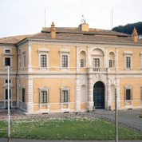
Nationaal museum Villa Giulia (Museo Nazionale Etrusco di Villa Giulia) is een museum met Etruskische kunst in Rome.
Thermen van Diocletianus
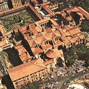
De Thermen van Diocletianus (Latijn: Thermae Diocletiani) was een groot openbaar thermencomplex in het oude Rome.
Basiliek van Onze-Lieve-Vrouw van de Engelen en van de Martelaren (Santa Maria degli Angeli e dei Martiri)
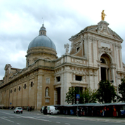
De Basilica di Santa Maria degli Angeli e dei Martiri (Nederlands:Basiliek van Onze-Lieve-Vrouw van de Engelen en van de Martelaren) is een rooms-katholieke kerk in Rome in de voormalige thermen van Diocletianus. De basiliek is gewijd aan de heilige Maagd Maria van de Engelen en aan de martelaren, daarmee ook doelend op de 40.000 christelijke dwangarbeiders die de thermen bouwden.
Santa Maria della Vittoria
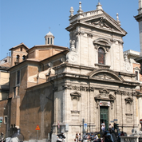
De Basilica di Santa Maria della Vittoria is een kleine basiliek in Rome. De kerk staat in de wijk Della Vittoria aan de Via del XX Septembre.
Ostia Antica
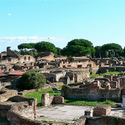
Ostia was in de Romeinse tijd de havenplaats van Rome. De stad is grotendeels bewaard en opgegraven, en is een van de best bewaarde Romeinse steden in Italië. De opgravingen liggen bij het moderne plaatsje Ostia Antica, dat met onder andere de moderne badplaats Lido di Ostia deel uitmaakt van de gemeente Rome aan de monding van de Tiber. De naam is afgeleid van het Latijnse ostium, riviermonding.
Sint-Paulus buiten de Muren (San Paolo fuori le Mura)
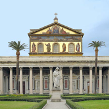
De Sint-Paulus buiten de Muren (San Paolo fuori le Mura) is een basiliek in Rome en een van de vier pauselijke basilieken van de stad. Ze werd in opdracht van keizer Constantijn als een kleine basiliek boven het traditionele graf van de apostel Paulus gebouwd, gelegen aan de Via Ostiensis in Rome. De oudchristelijke basiliek werd ingewijd op 18 november 324, tegelijk met de eerste Sint-Pietersbasiliek.
Piazza Campo de Fiori
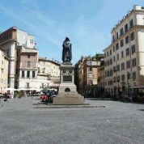
De Campo de' Fiori is een bekend plein in Rome. Deze piazza dankt zijn benaming niet aan de wekelijkse bloemenmarkt die er sinds de negentiende eeuw plaatsvindt, maar aan de oorspronkelijk weide in de Romeinse rione (wijk) Parione. Op het plein staat een standbeeld van Giordano Bruno, die hier in 1600 werd terechtgesteld.
Theater van Pompeius
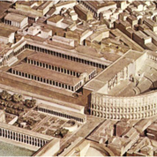
Het Theater van Pompeius (Latijn: Theatrum Pompei) was een antiek theater in het oude Rome uit de 1e eeuw v.Chr.. Het was het grootste theater van de Romeinse wereld en werd destijds beschouwd als een van de mooiste en belangrijkste monumenten van de stad. Het Theater van Pompeius stond model voor de latere Romeinse theaters die overal in het rijk gebouwd werden.
Palazzo Spada
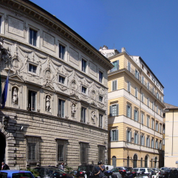
Palazzo Spada is een bouwwerk gelegen op de Piazza Capodiferro 3 te Rome.
Via Giulia
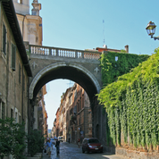
De Via Giulia, gelegen in de wijk Castel Sant'Angelo, is een in Rome gelegen straat, die vernoemd werd naar paus Julius II. De aanleg van de straat was onderdeel van een stedenbouwkundig project, waarbij Julius een ring van wegen wilde laten aanleggen, die de beide oevers van de Tiber met elkaar verbonden via de Ponte Sisto, aangelegd in opdracht van paus Sixtus IV, de Via della Lungara en een nieuw te bouwen brug. Voor het project riep Julius de hulp in van Donato Bramante.
Villa Farnesina
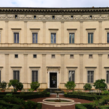
De Villa Farnesina is een landhuis uit het begin van de 16e eeuw in Rome. Het is gebouwd in een u-vorm en ligt in de ruim aangelegde Farnese-tuin. In het huis bevinden zich allerlei beroemde werken van bijvoorbeeld Rafaël en Baldassare Peruzzi.
Basiliek van Santa Maria in Trastevere
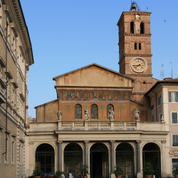
De Basiliek van Santa Maria in Trastevere (Latijn: Sanctae Mariae trans Tiberim) is waarschijnlijk de oudste Mariakerk van Rome en vormt met het ervoor gelegen plein het centrum van de wijk Trastevere, ten westen van de Tiber.
Tibereiland
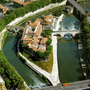
Het Tibereiland (Italiaans: Isola Tiberina, Latijn: Insula Tiberina) is een langwerpig eiland in de zuidelijke bocht van de rivier de Tiber in Rome.
Het eiland is ongeveer 270 meter lang en maximaal 67 meter breed. Het staat bekend als de locatie van de Tempel van Asclepius, de Griekse halfgod van de geneeskunde.
Cloaca Maxima
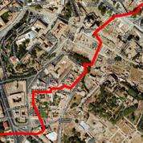
De Cloaca Maxima is het grote riool in Rome dat in de Tiber uitmondt. De naam komt van het Latijnse woord cloaca dat "riool" betekent. Het werd in de 7e eeuw v.Chr. onder Tarquinius Priscus als open kanaal gebouwd en werd in de 1e eeuw v.Chr. overdekt.
Santa Maria in Cosmedin
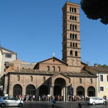
De Basilica di Santa Maria in Cosmedin is een basiliek in Rome.
La Bocca della Verità
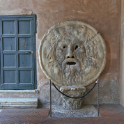
La Bocca della Verità (Nederlands, De Mond der Waarheid) is een beroemde gebeeldhouwde afbeelding van een menselijk hoofd bij de Piazza Bocca della Verità in Rome.
Theater van Marcellus
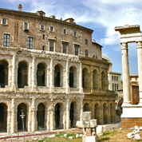
Het Theater van Marcellus (Latijn: Theatrum Marcelli) is een antiek theater in Rome, dat dateert uit de eerste eeuw v.Chr.
Forum Boarium
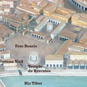
Het Forum Boarium is een oud marktplein in Rome. Het is het oudste forum van Rome en ligt op het kruispunt van enkele belangrijke wegen uit de oudheid.
Engelenburcht (Castel Sant' Angelo)
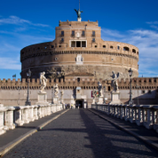
De Engelenburcht (Italiaans Castel Sant' Angelo) is een monument in Rome.
Friezenkerk
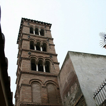
De Friezenkerk (ook bekend onder de Italiaanse naam Santi Michele e Magno) in Rome is in 1141 gebouwd tegen een van de Romeinse heuvels, de Janiculus, die grenst aan het Sint-Pietersplein. Dankzij haar ligging is zij bewaard gebleven toen in de 16e eeuw alle gebouwen die onder aan de heuvel stonden werden gesloopt voor de bouw van de Sint-Pieter. De kerk behoort tot de extraterritoriale bezittingen van het Vaticaan op de Janiculum, die in 1990 door de UNESCO zijn toegevoegd aan de Werelderfgoedlijst.
Waar nu de kerk van de Friezen staat (ook wel 'Kerk der Friezen' genoemd), woonde twaalfhonderd jaar geleden een Friese kolonie. Deze de Schola van de Friezen wordt genoemd bij de ontvangst van paus Leo III na zijn terugkeer in Rome in 799, bij de begroeting van Karel de Grote in 800, en door Lodewijk II in 844. In 845 verdedigden de Friezen samen met de inwoners van de andere scholae de Sint-Pieter en bijbehorende wijk tegen de inval van de Saracenen, helaas werden de scholae geplunderd. Kort daarna werd de wijk door een muur omgeven, waarvan nog altijd resten te zien zijn. Ieder die vanuit het Friese grondgebied naar Rome kwam streek daar neer. Ook andere volkeren hadden een dergelijke wijk, maar die van de Friezen ligt het dichtst bij de St Pieter.
Van het oude, originele kerkje dat bij die kleine nederzetting hoorde is niets teruggevonden. Het moet verwoest zijn door oorlogsgeweld. De patroon van de Friezenkerk was: Michael, de aartsengel die Rome ooit van de pest heeft bevrijd. Later kreeg het er een tweede patroon bij: Sint-Magnus, een heilige 3e-eeuwse bisschop die bij toeval hier, vijfhonderd jaar na zijn dood, terecht kwam. Volgens een inscriptie uit de 13e of 14e eeuw hadden al te ijverige Friezen namelijk zijn relieken mee naar het hoge noorden willen nemen, maar dat zou door Paus Leo IV tegengehouden zijn en de relieken bleven in Rome, in de kerk die vanaf toen een dubbele naam kreeg; kerk van Michael en Magnus. In 1141 is de nieuwe kerk gebouwd: groter en mooier dan de eerste kerk geweest moet zijn. Het was een romaans bouwwerk, met oude zuilen, en een fraaie klokkentoren. Die klokkentoren is nog steeds te bewonderen, maar de kerk ziet er nu heel wat anders uit dan toen hij gebouwd werd. In de achttiende en negentiende eeuw werd het interieur zo ingrijpend gewijzigd, dat alleen kleine details die ouderdom nog verraden. Er zijn twee fragmenten van een grafplaat voor een zekere Hebus, een Friese ridder die in 1004 in Rome op negentigjarige leeftijd overleed.
Sint-Pietersplein
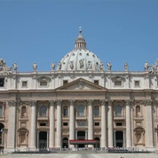
Het Sint-Pietersplein (Italiaans: Piazza San Pietro) is een plein in Vaticaanstad. De Sint-Pietersbasiliek bevindt zich aan het plein. Het is ontworpen door Gian Lorenzo Bernini, die daarbij gebruikgemaakt heeft van een klassieke stijl als een platform gecombineerd met barokke stijlelementen. Het Sint-Pietersplein is gebouwd tussen 1656 en 1667. Het plein is 240 meter breed en de lengte is 340 meter.
Vaticaanse Musea
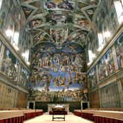
De Vaticaanse Musea (Italiaans: I Musei Vaticani) is een groep musea in de Apostolische paleizen waarin de kunstschatten van het Vaticaan te bezichtigen zijn. Deze collectie is in de loop der eeuwen ontstaan doordat pausen kunstwerken aankochten, lieten vervaardigen of veroverden.
Fontana della Pigna
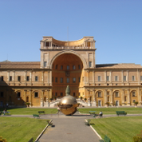
De Pigna is een voormalige fontein die nu dient als decoratie op een muur bij het Vaticaan.
Sarcofagi di Constantina e S.Elena
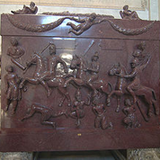
Santa Costanza is een kerk in Rome die gebouwd werd door de Romeinse keizer Constantijn de Grote in de eerste helft van de vierde eeuw. Het gebouw diende in eerste instantie als mausoleum voor Constantijns dochters Constantina en Helena. Later werd Constantina tot heilige verklaard en kreeg ze de Italiaanse naam Constanza en werd de kerk aan haar gewijd.
Laocoonte
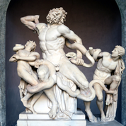
In de Griekse mythologie is Laocoön (Lat.) of Laokoön (Gr.) een Trojaanse priester van Apollon en Poseidon ten tijde van de val van Troje. Zijn verhaal is niet bij Homerus te vinden, maar wel bij latere Griekse en Romeinse auteurs.
Apollo Belvedere

De Apollo van Belvedère (ook wel Apollo Belvedere genoemd) is een beroemd marmeren beeldhouwwerk uit de klassieke oudheid, dat in de 15e eeuw werd herontdekt. Tegenwoordig staat het beeld op een binnenhof in het Apostolisch Paleis te Vaticaanstad en is het een onderdeel van de oudheidkundige verzameling van de Vaticaanse Musea. Het beeld is een Romeinse kopie van een Grieks origineel uit ca. 330-320 v.Chr., dat ontworpen werd door Leochares. Waarschijnlijk dateert de kopie uit de tijd van keizer Hadrianus (117-138).
Apoxyomenos
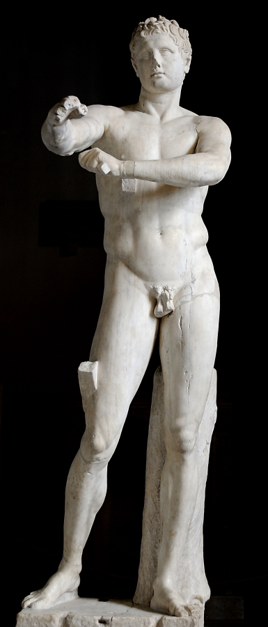
De Apoxyomenos is een standbeeld in Rome die een Athleet representeerd.
Torso del Belvedere
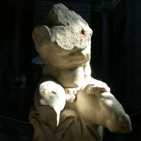
Torso del Belvedere is een torso van een standbeeld. Deze torso wordt gezien als het voorbeeld voor beweging in een standbeeld.
Augusto di Prima Porta
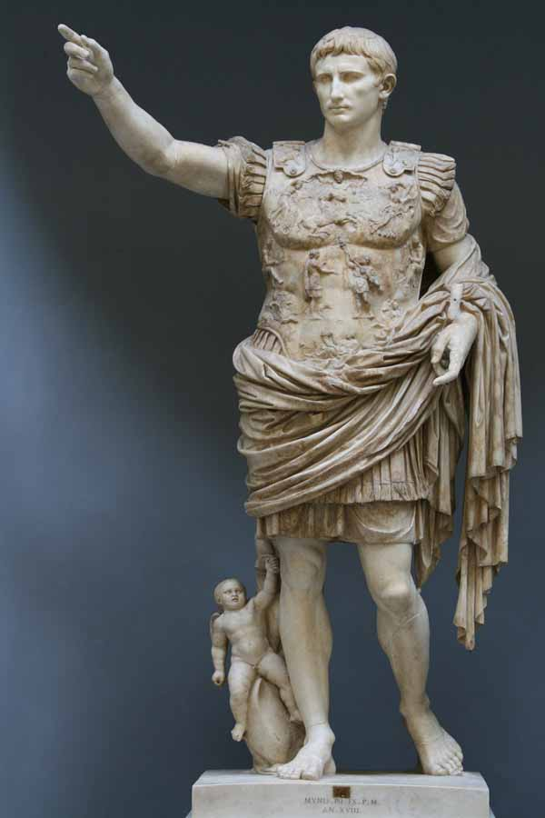
De Augustus van Prima Porta is een standbeeld uit de 1e eeuw van de Romeinse keizer Augustus. Het beeld werd op 20 april 1863 in de villa van Augustus' vrouw Livia ontdekt. Tegenwoordig staat het beeld in de Vaticaanse Musea.
Stanze di Raffaello
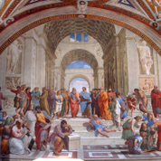
De vier Stanze di Raffaello in het Apostolisch Paleis in het Vaticaan zijn vier kamers in het publieke gedeelte van het paleis, die bekend zijn geworden door de fresco's van Rafaël Santi en zijn assistenten/leerlingen. De opdracht voor de decoratie van deze kamers werd rond 1508 gegeven aan de kunstenaar door paus Julius II. Hiermee wilde Julius II de pauselijke vertrekken van zijn voorganger paus Alexander VI qua grandeur overtreffen. In 1531 was het hele project voltooid.
Cappella Sistina
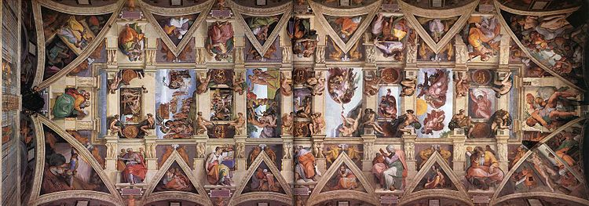
De Sixtijnse Kapel (Italiaans: Cappella Sistina) is de bekendste kapel in het Apostolisch Paleis, de residentie van de paus in Vaticaanstad en vaak te bezichtigen als onderdeel van de Vaticaanse musea.
Vaticaanse Bibliotheek
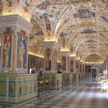
De Vaticaanse Bibliotheek, de Biblioteca Apostolica Vaticana, is de nationale bibliotheek van de Heilige Stoel, het Vaticaan, gevestigd in Vaticaanstad.
Pinacoteca
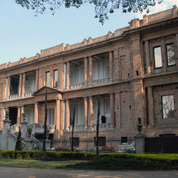
Een pinacotheek (Grieks: pinax = plank, tafeltje, schilderij) is een schilderijenverzameling of kunstkabinet.
Pompeï
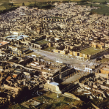
Pompeï (Italiaans: Pompei) is een gemeente en een Romeinse stad in de Italiaanse provincie Napels (regio Campanië) en telt 25.726 inwoners (31 december 2004). De oppervlakte bedraagt 12,4 km², de bevolkingsdichtheid is 2146 inwoners per km².
Pompeï was ook de naam van een provinciestad met ongeveer 20.000 inwoners die bestond van de 7e eeuw voor Christus tot in de eerste eeuw na Christus. Osken, Samnieten, Grieken, Etrusken en Romeinen lieten er allemaal hun sporen achter. Pompeï, dat in 62 n.Chr. al door een aardbeving was getroffen, werd in 79 bedekt door as als gevolg van een uitbarsting van de Vesuvius. Het is daardoor een van de bestbewaarde Romeinse steden geworden.
Nadat de eerste overblijfselen al aan het eind van de zestiende eeuw werden ontdekt, worden sinds de 18e eeuw archeologische opgravingen verricht. Sindsdien zijn grote delen van de stad blootgelegd en geeft de plaats een goed geconserveerd beeld van het Romeinse dagelijks leven. Pompeï staat op de Werelderfgoedlijst van UNESCO en is een belangrijke toeristische attractie die jaarlijks zo'n 2,5 miljoen bezoekers trekt.
Piazza Navona
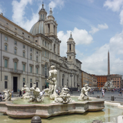
De Piazza Navona ligt in een van de oudste buurten van Rome, de Campus Martius. Het Pantheon, dat gebouwd is in de eerste eeuw v.Chr., staat vlakbij.
Ara Pacis
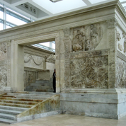
De Ara Pacis (Latijn, "Altaar van de Vrede") of Ara Pacis Augustae ("Altaar voor de Augusteïsche vrede") is een altaar in Rome dat is gewijd aan de vrede. De personificatie van de vrede wordt afgebeeld als de Romeinse godin Pax. Het is ingewijd op 30 januari in 9 v.Chr.
San Luigi dei Francesi
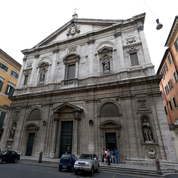
De San Luigi dei Francesi (Nederlands: H. Lodewijk van de Fransen) is een basiliek te Rome, en de kerk van de Franse gemeenschap in Italië. Ze staat naast het Palazzo Madama, de zetel van de Italiaanse Senaat in de wijk Campus Martius. In het fronton van de kerk prijkt het Franse wapenschild dat werd vervaardigd door Nicolas Mostaert.
Santa Maria sopra Minerva
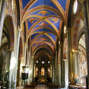
De Basilica Santa Maria sopra Minerva (Ned.: Basiliek van de heilige maagd, gebouwd over de tempel van Minerva) is een basiliek in Rome. De kerk is de titelkerk van de Britse kardinaal Cormac Murphy-O'Connor.
De kerk is gebouwd op het Piazza Minerva op het Marsveld, vlak bij het Pantheon. De Santa Maria sopra Minerva wordt beschouwd als de enige gotische kerk in de stad, de voorgevel stamt echter uit de Renaissance.
Sant'Ignazio
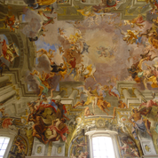
De kerk van Sant'Ignazio di Loyola in Campo Marzio (kortweg: de Sant'Ignazio) in de wijk Campus Martius te Rome is één van de belangrijkste barokkerken van Rome. Ze hoort bij het Collegio Romano, één van de gebouwen van de Pontificia Università Gregoriana. Onder meer Sint-Jan Berchmans ligt in de kerk begraven. De kerk is de titeldiaconie van Roberto kardinaal Tucci.
Chiesa del Gesù

De Santissimo Nome di Gesù (kortweg chiesa del Gesù, Il Gesù of Gesù) is een kerk in Rome. De naam van deze kerk betekent De allerheiligste naam van Jezus. De kerk is eind 16e eeuw in opdracht van kardinaal Alessandro Farnese gebouwd door Vignola en Della Porta die in 1568 begonnen. Van Farnese werd gezegd dat hij de drie schoonste zaken in Rome bezat: het Palazzo Farnese, zijn dochter en de Gesù. De Gesù is sinds haar inwijding in 1584 de belangrijkste kerk van de Orde der Jezuïeten.
Pantheon
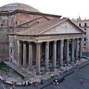
Het Pantheon (Grieks: "pas" = elke / "theos" = god) is een gebouw in Rome dat als tempel werd herbouwd tussen 118 en 125 na Christus. Het is in gebruik als rooms-katholieke basiliek en gewijd aan de Heilige Maria en de martelaren. Pantheon betekent 'gewijd aan alle goden'. Een andere mogelijke vertaling is: 'geheel goddelijk'. Het is het bekendste pantheon ter wereld.
Piazza del Popolo
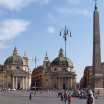
De Piazza del Popolo is een bekend plein in Rome.
De naam betekent in het Italiaans letterlijk "Plein van het volk", maar historisch gezien komt de naam van de populieren waar de kerk Santa Maria del Popolo aan het plein haar naam aan dankt.
Santa Maria de Popolo
De Santa Maria del Popolo is een augustijner kerk in Rome, gelegen aan de noordkant van het Piazza del Popolo. De kerk heeft een centraal middenschip met twee zijbeuken, die omringd worden door 11 straalkapellen. In de koepel van de kerk, symbool van de invloed van de renaissancestijl en behorend tot de Chigi-kapel, bevinden zich mozaïeken die werden ontworpen door Rafaël Santi; zij verbeelden 'De Schepping van de wereld'.
Pincio
De Pincio (Latijn: Mons Pincius) is een heuvel in Rome. De heuvel bevindt zich net ten noorden van de oude stad. De Pincioheuvel behoorde niet tot de oorspronkelijke Zeven heuvels van Rome.
Villa Borghese
De Villa Borghese is een openbaar park in de Italiaanse hoofdstad Rome. Het 80 hectare grote park biedt naast de landschappelijk aangelegde tuinen diverse musea, villa's, paviljoenen en sculpturen.